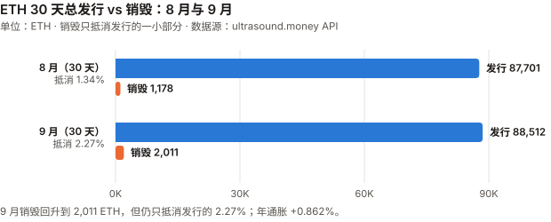
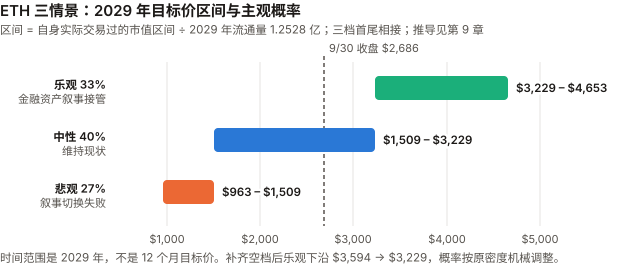

ETH / Ethereum 完整调研与分析报告
编写日期：2026 年 10 月 3 日
数据截止：2026 年 9 月 30 日（9 月与 Q3 完整数据已闭合）；链上滚动窗口取到 10/3
版本：2026 年 9 月版（第二期）兼 Q3 季度回顾
研究方法：沿用 8 月首期框架。本期第一次有上期论点可核对（E8-1 至 E8-6，见 3.0）。本版更新要点：
- 9 月 +8.85%，Q3 +70.86%——收于 $2,686.01（币安日线）。Q3 是 ETH 在本系列 BTC / ETH / SOL / ADA 四个资产里涨幅最大的（与 ADA +70.78% 并列），ETH/BTC 比价 Q3 +19.8%。
- 本期最重要的发现：8 月版留下的「blob 收入塌陷是需求侧还是供给侧」有答案了——是供给侧。
逐块读取链上数据：每块 blob 用量从 2025-04 的 2.73 个升到 2026-09 的 5.56 个（翻倍），而供给目标从 3 个上调到 14 个（4.7 倍）。
需求在增长，只是供给扩得更快，价格因此跌到地板。Fusaka 的 EIP-7918 把这个地板从 1 wei 抬到了执行层 base fee 的 1/16——2026 年 blob 价格一直贴着这条线，blob 销毁 ≈ 下限价格 × 用量。- L1 费用 9 月回升到 $1,591 万（环比 +53%），真年同比 −55.4%；销毁抵消发行的比例从 1.34% 升到 2.27%——方向改善，量级仍可忽略。年通胀 +0.862%，与 8 月几乎相同。
- 机构侧首次取得一手数据：ETF 改用 Farside 日度表——9 月净流入 $8.31 亿，Q3 $30.5 亿；质押型 ETF ETHB 9 月流入 $1.91 亿，占当月流入的 23%。
BitMine 每周 8-K：ETH 持仓从 590.1 万枚升到 600.1 万枚（约 4.9% 供应量），其中 84% 已质押。- Glamsterdam：以太坊基金会 9/17 公告测试网 Sepolia 于 10/6 激活，主网日期未定。
- 8 月版的四处更正（见 11.5）：base fee「0.3115 gwei」是单点快照，8 月月均为 0.173 gwei；ETF 8 月净流入按 Farside 全月为 $18.5 亿；8 月涨幅改按币安 UTC 收盘为 +32.48%（原 CoinGecko 零点快照口径 +29.86%）；情景区间之间的空档补齐。
免责声明：本报告不构成任何投资建议。所有分析仅供研究参考，投资决策请咨询专业顾问。
核心结论摘要（一页速览）
| 维度 | 核心判断 |
|---|---|
| ETH 是什么 | 一条可编程结算层：把执行外包给 L2，自己保留结算与数据可用性 |
| 当前价格位置 | $2,686.01（9/30 币安收盘），市值约 $3,279 亿（全球第 2）。距 ATH（$4,956.78，币安 2025-08-24 盘中）−45.8%；YTD −9.61% |
| 9 月 / Q3 表现 | 9 月 +8.85%、Q3 +70.86%。Q3 比 BTC beta 预期高约 17–19pp，约 1–1.5 个标准差，不能排除噪声；9 月的 +2.6pp 在噪声范围内 |
| 本期最重要的发现 | blob 收入塌陷是供给侧原因：每块 blob 用量一年半翻倍（2.73 → 5.56），供给目标涨 4.7 倍（3 → 14），价格跌到地板。EIP-7918 把地板从 1 wei 抬到执行层 base fee 的 1/16；用量低于目标期间，blob 销毁 ≈ 下限价格 × 用量，L2 增长通过用量线性传导，但不推高单价。用量要再涨约 2.5 倍，blob 才会重新进入市场定价 |
| 发行与销毁 | 30 天销毁 2,010.7 ETH vs 总发行 88,512 ETH，抵消 2.27%（8 月 1.34%）；年通胀 +0.862%。「超声波货币」仍然失效 |
| L1 费用 | 9 月 $1,591 万，环比 +53%、真年同比 −55.4%。月均 base fee 0.173 → 0.289 gwei。回升，但仍在 8 月版登记的 $2,000 万门槛之下 |
| 机构通道 | ETF 9 月 +$8.31 亿（Farside 一手），放缓到 8 月的 45%；质押型 ETF ETHB 9 月流入 $1.91 亿、资产 $11.76 亿（BlackRock 一手）。BitMine 9 月增持 10.0 万枚，持有约 4.9% 供应量 |
| 核心多头逻辑 | 抵押品层地位（L1 TVL $533 亿，第二名的 8.0 倍）；质押型 ETF 规模在增长；BitMine 84% 持仓已质押、持续增持；Q3 跑赢 BTC 19.8% |
| 核心空头逻辑 | 销毁只抵消发行的 2.27%；L1 费用真年同比 −55.4%；blob 供给目标（14 个/块）远高于用量（5.56），blob 价格贴地板、销毁很少；BitMine 单一实体约 4.9% 供应量；ETF 流入放缓 |
| 估值立场 | 现金流（50 倍市盈率）只能解释市值的 约 3%。情景框架沿用 8 月版，补齐区间空档后概率机械调整为 33/40/27（不是观点变化，见 9.4）；作者的基准预期是中性情景（2026 年实际交易区间内震荡） |
| 风险等级 | 低于 SOL 与 ADA，高于 BTC。年化波动 9 月 43.6%、过去一年 63.7% |
1. Ethereum 的起源与设计取舍
本章与 8 月首期相同，此处只保留理解本期内容必需的部分。完整内容见
eth_research_report_202608.md第 1 章。
| Bitcoin | Ethereum | |
|---|---|---|
| 目标 | 点对点电子现金 | 可编程的世界状态机 |
| 代币角色 | 就是资产本身 | 是资产，也是使用网络的燃料 |
| 供应规则 | 硬编码 2,100 万 | 没有硬上限，发行规则随共识升级变化 |
改变 ETH 资产性质的升级：
| 升级 | 时间 | 改变了什么 |
|---|---|---|
| EIP-1559 | 2021-08-05 | base fee 销毁——「ETH 可能通缩」叙事的起点 |
| The Merge | 2022-09-15 | PoW → PoS，发行降约 90%，ETH 成为有收益的资产 |
| EIP-4844（Dencun） | 2024-03 | blob——给 L2 的廉价数据通道 |
| Fusaka | 2025-12-03 | gas limit 默认 60M（EIP-7935）、PeerDAS（EIP-7594）、blob 价格下限（EIP-7918）、BPO 分叉机制（EIP-7892，单独上调 blob 容量） |
本期新增的一行理解：Fusaka 不只是扩容。它的 EIP-7918 改变了 blob 的定价规则——
在需求不足时，blob 价格不再跌到 1 wei，而是停在执行层 base fee 的 1/16。第 5 章会说明这对价值捕获意味着什么。
（Fusaka 包含的 EIP 清单取自 GitHubethereum/EIPs的元 EIP-7607 原文。）
2. ETH 的发展阶段划分
阶段一至四见 8 月首期。阶段五追加本期事件。
阶段五：叙事切换与机构接管（2025.12– 至今）
| 时点 | 事件 |
|---|---|
| 2025-12-03 | Fusaka 激活：gas limit 60M、PeerDAS、blob 价格下限（EIP-7918） |
| 2026-01-15 | 年内最高市值 $4,045 亿（CoinGecko） |
| 2026-03 | BlackRock ETHB（质押型 ETF）上线；Farside 显示 3 月流入 $3.06 亿 |
| 2026-06-26 | 年内最低市值 $1,890 亿 |
| 2026-07 | ETF 净流入 $3.67 亿，高于同期 BTC ETF 的 $1.73 亿（Farside 一手核实了 8 月版的这条说法） |
| 2026-08 | +32.48%（币安 UTC 收盘口径）；ETF 净流入 $18.5 亿 |
| 2026-09-04 | BitMine 终止与 Ethereum Tower 的质押管理协议（8-K Item 1.02） |
| 2026-09-15/16 | CLARITY 法案参议院程序性投票失败、美联储加息 25bp；两日 ETF 合计流出 $3.66 亿，ETH 9/15 单日 −4.67% |
| 2026-09-17 | 以太坊基金会公告 Glamsterdam 测试网（Sepolia）10/6 激活，主网未定 |
| 2026-09-21 | ETH 盘中高点 $2,807.34；ETF 单日流入 $2.70 亿 |
| 2026-09-28 | BitMine 持仓突破 600 万枚（6,001,302） |
| 2026-Q3 | +70.86%；ETH/BTC +19.8% |
3. ETH 当前现状分析
3.0 论点校验：8 月版登记的 6 条
8 月首期登记的 E8-1 至 E8-6 中，没有一条在 9 月到达检验窗口——它们的截止日在 2026-12 至 2027-06。
下表记录 9 月的中期读数，不做判定。
| # | 论点 | 检验条件（摘要） | 9 月读数 | 状态 |
|---|---|---|---|---|
| E8-1 | 销毁不再能有意义地抵消发行 | 年底前任一月 销毁 ÷ 总发行 >15% 则错 | 2.27%（30 天窗口，9/3–10/3） | ⏳ 距门槛约 6.6 倍 |
| E8-2 | Glamsterdam 会压低 L1 单位费用 | 上线后满一月，月均 base fee 高于上线前一月则错 | 主网未上线（Sepolia 10/6） | ⏳ 未到窗口 |
| E8-3 | blob 销毁塌陷不会自行恢复 | 2027-03-31 前任一 30 天 blob 销毁 >80 ETH 则错 | 2.98 ETH | ⏳ 距门槛约 27 倍；本期查清塌陷是供给侧原因：用量翻倍、目标涨 4.7 倍（见 5.1） |
| E8-4 | L1 费用下行是结构性的 | 9–12 月任一月 L1 费用 >$2,000 万则错 | 9 月 $1,591 万，环比 +53% | ⏳ 9 月未触发，但已走到门槛的 80% |
| E8-5 | 中性情景是最可能的单一结果 | 2026 年 12 月月均市值落在 $2,055 亿–$3,727 亿之外则错（区间按登记时 1–8 月月均的最低、最高月写死，见记分卡） | 9 月月均市值 $3,115 亿 | ⏳ 在区间内 |
| E8-6 | 企业储备集中度会以可观测方式兑现风险 | BitMine/SharpLink 单次减持 >5%、mNAV 连续一月 <1、或被迫融资，任一发生则成立 | BitMine 增持 10.0 万枚；mNAV 只能算出下限 0.97（见 6.2） | ⏳ 未见触发事件 |
最需要注意的是 E8-4：9 月 L1 费用已到 $1,591 万，距 $2,000 万门槛只差 26%，而 2026 年 4 月曾到过 $2,443 万。
Q4 任一月触发，本条就判错——这是 8 月版两个核心章（L1 费用、价值捕获）里最可能先被证伪的一条。
3.1 价格与市场
口径变更：8 月首期用 CoinGecko 的「日期值」（实为当日 00:00 UTC 快照）。本期起改用币安日线 UTC 收盘，与 BTC 报告统一，便于横向对照。
8 月涨幅按新口径为 +32.48%（7/31 收 $1,862.60 → 8/31 收 $2,467.65），原口径为 +29.86%。
| 指标 | 数值 | 口径 |
|---|---|---|
| 9/30 收盘 | $2,686.01 | 币安 ETHUSDT 日线 |
| 市值 | 约 $3,279 亿（全球第 2） | 收盘价 × 流通量 1.2209 亿（ultrasound.money） |
| 历史最高价 | $4,956.78（2025-08-24 盘中，币安）；CoinGecko 口径 $4,946.05 | — |
| 距 ATH | −45.8% | 币安 |
| 9 月区间 | 低 $2,356.41（9/2）/ 高 $2,807.34（9/21） | 币安日线盘中 |
| 区间 | ETH | BTC | ETH/BTC 比价 |
|---|---|---|---|
| 9 月（8/31→9/30） | +8.85% | +6.42% | 0.03140 → 0.03212（+2.29%） |
| Q3（6/30→9/30） | +70.86% | +42.64% | 0.02681 → 0.03212（+19.81%） |
| YTD | −9.61% | −4.59% | −5.25% |
| 近 1 年（2025-09-30 起） | −35.20% | −26.68% | −11.64% |
beta 与 R² 一起读（XIN 期规则），以及 beta 残差（CKB 期规则）：
| 窗口 | 年化波动 | 对 BTC 的 beta | R² | beta 预期涨幅 | 实际 | 自身成分 |
|---|---|---|---|---|---|---|
| 9 月 | 43.6% | 0.98 | 0.86 | +6.30% | +8.85% | +2.55pp |
| Q3 | 52.6% | 1.21 | 0.77 | +51.69% | +70.86% | +19.17pp |
| 近 1 年 | 63.7% | 1.28 | 0.82 | −34.22% | −35.20% | −0.98pp |
Q3 的自身成分有多大把握（
_bian审查后补算）：残差年化波动 = 52.6% × √(1 − 0.77) ≈ 25%，一个季度的 1 个标准差约 12.7pp——+19.2pp 约 1.5 个标准差；改用对数收益计算约 0.8 个标准差。9 月的 +2.55pp 约 0.55 个标准差，在噪声范围内。
所以只能说 Q3 高于 beta 预期约 17–19pp，不能排除噪声，不能说「ETH 不只是跟涨」。
同期的 ETH 专属事件：ETF 流入 $30.5 亿、BitMine 持续增持、L1 TVL 从 $374 亿升到 $533 亿。
这些是相关，不是已证明的原因——ETF 流量与价格同步（BTC 记分卡模式二），BitMine 的买入量相对日成交额有多大，本报告没有测。
9 月的两个大涨日：9/18 +6.74%、9/21 +4.95%——与 BTC 同一天（BTC +5.85%、+6.70%），对应 9/18 原油回落与 SEC 对代币化股票交易的有限放行、9/21 ETF 大额流入（事件归因见 BTC 9 月版，为媒体转述）。
9/15 −4.67%——CLARITY 法案程序性投票失败当日。
3.2 L1 活动与费用
L1 月度费用序列（DefiLlama API 日度数据按月聚合，一手）：
| 月份 | L1 费用 | 月份 | L1 费用 |
|---|---|---|---|
| 2025-07 | $49,497,182 | 2026-02 | $15,187,083 |
| 2025-08 | $39,587,105 | 2026-03 | $10,580,034 |
| 2025-09 | $35,661,007 | 2026-04 | $24,425,831 |
| 2025-10 | $41,181,773 | 2026-05 | $16,579,471 |
| 2025-11 | $23,438,885 | 2026-06 | $10,777,326 |
| 2025-12 | $11,470,440 | 2026-07 | $8,314,396 |
| 2026-01 | $13,960,819 | 2026-08 | $10,382,162 |
| 2026-09 | $15,905,378 |
| 比较 | 结果 |
|---|---|
| 真年同比（2026-09 vs 2025-09） | −55.4%（8 月为 −73.8%） |
| 环比（vs 2026-08） | +53.2% |
| 过去 12 个月合计（2025-10 至 2026-09） | $2.022 亿 |
其中归入「收入」（即销毁部分，DefiLlama dailyRevenue） |
9 月 $487.9 万 |
月均 base fee（ultrasound.money 日度序列取月均，一手）：
| 月份 | 月均 base fee |
|---|---|
| 2025-08 | 0.646 gwei |
| 2026-06 | 0.278 gwei |
| 2026-07 | 0.168 gwei |
| 2026-08 | 0.173 gwei |
| 2026-09 | 0.289 gwei（+67%） |
⚠️ 8 月版的更正：8 月版写「当前 base fee 0.3115 gwei」，那是一个单点快照；8 月的月均是 0.173 gwei。
本期起统一用月均——base fee 一天之内可以相差数倍（10/3 快照为 0.062 gwei），单点不适合做月度对比。
9 月费用回升的读法：费用以美元计，同时受 ETH 价格（+8.85%）和 gas 单价（+67%）影响。
按 EIP-1559，base fee 只在区块使用率高于 50% 目标时上升——月均 base fee 上升是需求相对容量上升的间接信号，不是交易量的直接测量（Codex）。而且 $1,591 万仍是一年前同月的 45%。
生态合计费用（DefiLlama overview/fees/ethereum，30 天）：$3.507 亿。前列为 Lido $5,141 万、Aave V3 $2,831 万、Sky Lending $2,686 万、Ethena USDe $2,353 万、Binance staked ETH $1,786 万；L1 链本身（DefiLlama 记为「Ethereum」）$1,652 万，占 4.7%。
口径纪律（ADA 期）：L1 费衡量 ETH 代币的价值捕获，生态合计衡量生态活跃度，不能混用。
3.3 质押
| 指标 | 数值 | 来源 |
|---|---|---|
| 质押总量 | 4,370 万 ETH | validatorqueue.com（数据来自 beaconcha.in） |
| 质押率 | 35.78%（8 月 35.08%） | 同上 |
| 年化 APR | 2.63% | 同上 |
| 活跃验证者 | 873,849 | 同上 |
| 进入队列 | 154.5 万 ETH，等待约 26 天 20 小时 | 同上 |
| 退出队列 | 80.5 万 ETH，等待约 14 天 | 同上 |
验证者数量不能和 8 月版直接比：8 月版的 795,000（StakingRewards）与约 903,000（Beacon Chain）两个口径本就有分歧；
且 Pectra 升级后单个验证者的有效余额上限提高到 2,048 ETH，合并验证者会让数量下降而质押量不变。本期只用质押量。
进入队列是退出队列的约 1.9 倍：净排队约 74 万 ETH 等待进入质押。若全部完成，质押率将升到约 36.4%——而质押越多，发行越多（见 4.3）。
3.4 生态数据：TVL 与 L2
TVL（DefiLlama API，一手，10/3 快照）：
| 链 | TVL |
|---|---|
| Ethereum（L1） | $534.5 亿（9/30 $532.9 亿；8/31 $487.7 亿；6/30 $373.5 亿） |
| Solana | $66.4 亿 |
| Base | $63.5 亿 |
| BSC | $57.2 亿 |
| Tron | $56.4 亿 |
| Arbitrum | $14.1 亿 |
| OP Mainnet | $4.9 亿 |
L1 TVL 是第二名（Solana）的 8.0 倍（8 月版为 8.5 倍）。L1 TVL Q3 增长 42.7%，低于 ETH 价格的 70.9%——TVL 以美元计，主要随价格变动，不应把它的增长读成独立的需求证据。
主要 L2 的 9 月费用（DefiLlama API）：Base $470 万（8 月 $303 万）、Arbitrum $61 万（8 月 $37 万）。
3.5 宏观环境
ETH 与 BTC 共享宏观驱动，详细数据见 BTC 9 月版 3.4。以下只列对 ETH 有特别含义的几项。
| 因素 | 9 月末 | 对 ETH 的含义 | 来源 |
|---|---|---|---|
| 联邦基金利率 | 3.75–4.00%（9/16 加息 25bp，12:0） | 点阵图中位数指向年内再加一次 | federalreserve.gov ✅ |
| 10 年期美债 | 5.29%（年内最高） | 是 ETH 质押 APR 2.63% 的约 2 倍——买 ETH 的人不是为了质押收益 | 美国财政部 ✅ |
| 美元指数 | 101.45 | — | Yahoo Finance |
与 BTC 9 月版同一个观察：9 月宏观全面偏鹰，ETH 仍涨 8.85%、Q3 涨 70.9%。
本报告不把「宏观偏鹰」直接翻译成「ETH 偏空」——Q3 的数据不支持这个翻译；但也不反过来说利率无关（见 BTC 9 月版 3.1）。
3.6 Q3 季度回顾（本版新增）
| Q2 2026 | Q3 2026 | |
|---|---|---|
| ETH 季度涨跌（币安） | −25.34%（3/31 收 $2,105.43 → 6/30 收 $1,572.01） | +70.86% |
| ETH/BTC | 0.02681（6/30） | 0.03212（+19.8%） |
| ETF 季度净流量（Farside） | −$7.16 亿（4 月 +3.56、5 月 −5.41、6 月 −5.30） | +$30.50 亿 |
| L1 季度费用（DefiLlama） | $5,178 万 | $3,460 万 |
| 季末 L1 TVL | $373.5 亿 | $532.9 亿 |
| 季末质押率 | — | 35.78% |
Q3 最突出的一组对照：价格 +70.9%、ETF +$30.5 亿、TVL +42.7%——而 L1 费用比 Q2 低 33%。
这正是 8 月版 9.6 弱点 6 预先指出的那种情景：「ETH 价格上涨，同时 L1 价值捕获继续恶化」——完全由金融配置驱动、与网络费用脱钩。
Q3 把它从一个弱点变成了已发生的事实，见 9.3 对情景集的处理。
Q2 的 L1 季度费用为 4–6 月合计（$2,443 万 + $1,658 万 + $1,078 万）；Q3 为 7–9 月合计（$831 万 + $1,038 万 + $1,591 万）。
4. 发行与销毁
本章全部数据来自 ultrasound.money 公开 API（一手直接调用）。
4.1 9 月的供应变化
| 30 天窗口（9/3 06:00 → 10/3 06:11 UTC） | ETH |
|---|---|
| 起点供应 | 122,008,832.71 |
| 终点供应 | 122,095,334.29 |
| 净增 | +86,501.58 |
| 销毁 | 2,010.68（≈ $531 万） |
| 推算总发行（= 净增 + 销毁） | 88,512.26（含罚没等调整，量级可忽略；严格说是「净发行 + 销毁」） |
| 销毁 ÷ 总发行 | 2.27%（8 月 1.34%） |
| 年通胀率 | +0.862%（8 月 +0.863%） |

图中数字（ETH，取整）：8 月总发行 87,701、销毁 1,178（取自 8 月版）；9 月总发行 88,512、销毁 2,011。
交叉核对：ultrasound.money 的 issuance-estimate 接口给出当前每个 slot 发行 0.40996 ETH，折合 30 天 88,551 ETH，与上表的 88,512 ETH 相差 0.04%。
这两个数来自同一个数据源，一致只说明内部自洽，不构成独立验证（CKB 期规则）。
长周期视角：合并以来（2022-09-15）总供应 120,521,140.92 → 122,095,334.29，+1.31%（约四年）。
「超声波货币」仍然失效：销毁抵消发行的比例从 1.34% 升到 2.27%，方向改善但量级仍可忽略。
要回到 2021–2023 年的净通缩，销毁需要再涨约 44 倍。
4.2 质押收益的来源
| 步骤 | 计算 | 结果 |
|---|---|---|
| 年化总发行 | 0.40996 ETH/slot × 7,200 × 365 | 约 1,077,400 ETH |
| 质押总量 | validatorqueue.com | 4,370 万 ETH |
| 仅由发行贡献的收益率 | 1,077,400 ÷ 43,700,000 | 约 2.47% |
| 报告的实际 APR | validatorqueue.com | 2.63% |
| 差额（隐含执行层收益：优先费 + MEV） | 2.63% − 2.47% | 约 0.17pp |
8 月版指出的三处方法缺陷仍然存在（两个口径不同、MEV-Boost 的 builder→proposer 支付不在链上 gas 里、质押数据为二手），
所以本期同样只给方向：质押收益的绝大部分来自新发行。 差额 0.17pp 比 8 月的 0.10pp 大，与 9 月 base fee 回升方向一致，但精度不足以下结论。
对不质押的持有者：每年被稀释约 0.862%，无补偿（含所有非质押型 ETF 的持有人）。
5. L2 与价值捕获（本期核心章）
5.1 blob 收入为什么塌了——8 月版问题的答案
8 月版 5.1 留下了一个问题：blob 销毁从历史月均 158.6 ETH 塌到 1.81 ETH，是需求侧（L2 用得少了）还是供给侧（blob 供给目标上调、价格触及地板）？两种解释的政策含义相反——前者是结构性的，后者是可逆的价格现象。
本节在发布前审查后重写（见 11.6）。初稿只用价格数据就宣布了答案，而价格贴地板这个状态，两种解释都会产生——它区分不了两者（
_bian）。
初稿还把 EIP-7918 写成了塌陷的原因，方向反了：它是把地板抬高的那个机制。重写后补上了能真正区分两种解释的数据：每个区块实际用了多少 blob。
第 1 步 · 供给目标被上调了三次（GitHub ethereum/EIPs 原文，一手）：
| 时间 | 升级 | 每块 blob 目标 / 上限 | 来源 |
|---|---|---|---|
| 2024-03 | Dencun（EIP-4844） | 3 / 6 | EIP-4844 |
| 2025-05-07 | Pectra（EIP-7691） | 6 / 9 | 元 EIP-7600 激活表、EIP-7691 常数 |
| 2025-12-09 | BPO1 | 10 / 15 | 元 EIP-7607 激活表；目标值取自 EIP-7892 的配置示例 |
| 2026-01-07 | BPO2 | 14 / 21 | 同上 |
BPO1、BPO2 的激活时间来自 EIP-7607 的激活表（一手）；10 / 15、14 / 21 这组参数取自 EIP-7892 原文的配置示例，本报告未在客户端配置里逐一核对，但它与下面测到的「上限 21」一致（2026-02 抽样中出现过 21 个 blob 的区块）。
第 2 步 · 实际用量翻了一倍，目标涨了 4.7 倍（以太坊公共 RPC 节点，逐块读取 blobGasUsed ÷ 131,072，每月均匀抽样 240 个区块，一手）：
| 月份 | 每块平均 blob 数 | 中位数 | 当时的目标 | 用量 ÷ 目标 | blob 价格状态 |
|---|---|---|---|---|---|
| 2025-04（Pectra 前） | 2.73 | 3 | 3 | 91% | 市场定价（月均 54.8 亿 wei） |
| 2025-06（Pectra 后） | 3.76 | 3 | 6 | 63% | 跌到 1 wei |
| 2025-11 | 5.68 | 6 | 6 | 95% | 回升（4,710 万 wei） |
| 2026-02（BPO2 后） | 4.52 | 4 | 14 | 32% | 贴在下限 |
| 2026-09 | 5.56 | 5 | 14 | 40% | 贴在下限 |
答案：是供给侧，不是需求侧。 从 2025-04 到 2026-09，每块 blob 用量从 2.73 升到 5.56（+104%），而供给目标从 3 升到 14（4.7 倍）。
需求在增长，供给增长得更快——每次目标上调后，用量落到目标之下，价格就跌到地板：
2025-06（Pectra 后一个月）用量只有目标的 63%，价格跌到 1 wei；2025-11 用量追到目标的 95%，价格回升；BPO1、BPO2 之后又落到 32%–40%。
⚠️ 限度：每月只抽 240 个区块、只用一个 RPC 节点，用量是抽样估计，不是全量；但需求翻倍与目标 4.7 倍之间的差距远大于抽样误差。
初稿用 Base 的 L2 手续费（9 月 $470 万）来论证「L2 活动没减少」——那是 L2 向用户收的钱，不是 blob 用量，已删除这条论据。
第 3 步 · EIP-7918 做了什么：把地板从 1 wei 抬到执行费的 1/16（GitHub ethereum/EIPs 原文，一手）：
- Fusaka（元 EIP-7607）包含 EIP-7918「Blob base fee bounded by execution cost」，状态 Final。
- 原文规则：当
BLOB_BASE_COST × 执行层 base fee高于GAS_PER_BLOB × blob base fee时，excess_blob_gas停止下调（BLOB_BASE_COST = 2^13，GAS_PER_BLOB = 2^17，原文称「这个比例是 1/16」）。 - 它是一条「停止下调」的软规则，不是把价格直接设为 1/16（Codex 指出）：价格低于这条线时，
excess_blob_gas按实际用量上升，价格被推回线上；高于这条线且用量低于目标时，价格回落。均衡结果是价格围绕这条线波动。 - 原文动机：旧机制下价格「可能反复下调，直到最终停在 1 wei」——2024-07 至 09、2025-06 至 08 正是这种情况。
数据（ultrasound.money base-fee-over-time，日度均值按月平均后相除，一手）：
| 时期 | blob base fee 月均 | blob ÷ 执行层 base fee |
|---|---|---|
| 2024-03 | 69.4 亿 wei | 0.158 |
| 2024-07 至 09 | 1–41 wei | ≈ 0（1 wei 地板） |
| 2024-11 至 2025-04 | 15.7 亿–131 亿 wei | 0.43–4.61（用量高于目标，市场定价） |
| 2025-06 至 08 | 1 wei | ≈ 0（1 wei 地板） |
| 2026-01 至 09 | 680 万–3,170 万 wei | 0.053–0.067（围绕 1/16 = 0.0625） |
比值是「月均 blob 价 ÷ 月均执行价」，不是逐日比值的平均；比值略低于 0.0625 与软规则的波动一致。月均看不到月内的短时脱离，所以只能说「平均而言」贴着下限。
第 4 步 · 这对价值捕获意味着什么
| Fusaka 之前（2025 年中） | Fusaka 之后（2026 年） | |
|---|---|---|
| 用量低于目标时的 blob 价格 | 1 wei | 约为执行层 base fee 的 1/16 |
| blob 销毁 | ≈ 0 | ≈ 下限价格 × 用量——随用量线性增长 |
| 用量超过目标时 | 价格被推高（市场定价） | 同左，EIP-7918 不改变这一段 |
- 需求低于目标时，单价不随 L2 用量上涨——这是 EIP-4844 以来 blob 市场的性质，不是 EIP-7918 造成的。
- EIP-7918 让销毁至少随用量线性增长，而在它之前，同样的状态下销毁约等于零。相对 Fusaka 之前，它恢复了一部分传导，而不是切断。
- 当前离「价格脱离下限」有多远：9 月用量 5.56 个/块，目标 14——用量要再涨约 2.5 倍，blob 才会重新进入市场定价。在那之前，blob 销毁 ≈ 执行层 base fee ÷ 16 × 用量。
本期 blob 销毁（ultrasound.money fees/all，一手）：
| 周期 | blob 销毁 | 折美元 |
|---|---|---|
| 24 小时 | 0.068 ETH | $183 |
| 7 天 | 1.18 ETH | $3,174 |
| 30 天 | 2.98 ETH | $7,848（8 月 1.81 ETH / $4,436） |
| EIP-4844 以来累计 | 4,722.06 ETH | $1,485 万 |
对 E8-3（2027-03 前 blob 销毁回到 80 ETH/30 天）的含义：要从 2.98 ETH 到 80 ETH，要么执行层 base fee 涨约 27 倍（约 7.8 gwei，接近 2025-01 的月均 10.1 gwei），要么用量涨约 2.5 倍、让 blob 重新进入市场定价。
5.2 这是不是设计意图？
是，而且是两个独立的设计选择。
- 上调 blob 目标（Pectra、BPO1、BPO2）：明确目标是降低 L2 成本、为 L2 扩容。供给跑在需求前面是这一路线的预期结果——EIP-7892 原文说 BPO 是为了「根据真实需求和网络条件」快速扩容。
- EIP-7918：原文目标是让 blob 的「费用更新机制能正常运作」，并让 blob 使用者「至少支付节点计算成本的一部分」。它不是为提高 ETH 的价值捕获设计的——原文还讨论了下限「过高」的情形，认为在当前路线上不会发生。
本报告的立场：ETH 用 L1 收入换取了 L2 成本下降与生态规模，这是战略选择，8 月版的判断不变。
本期更正的一点：blob 收入塌陷不是「L2 不用 ETH 了」——L2 对 blob 的用量一年多翻了一倍。是供给扩得比需求快，这在需求追上目标之后是可逆的（2025-11 就短暂发生过）。
5.3 供给侧：Glamsterdam
- Glamsterdam（以太坊基金会 9/17 公告，一手）：Sepolia 于 2026-10-06 13:53:36 UTC 激活；「Hoodi 与主网的激活时间将由客户端团队决定……本公告不安排主网升级」。
包含 ePBS（EIP-7732）、区块级访问列表（BALs，EIP-7928）、状态相关 gas 重新定价（EIP-8037/8038）等。
公告提到客户端激活后默认 60M gas limit、需显式配置才是 200M——「200M」不是一个已确定的网络目标。 - 联动：执行层 base fee 若被压低，blob 下限也会同比例降低——两条销毁路径会一起变薄（E8-2 检验的就是执行层这一半）。
6. 机构通道与持有者结构
6.1 ETF：9 月放缓，质押型产品占比上升
本期起使用 Farside 的日度一手数据（farside.co.uk，直接抓取并逐日加总）。8 月版这一项全部来自媒体转述，是多头论据证据等级偏低的主因。
| 月份 | 净流量 | 净流入天数 | 其中 ETHB（质押型） |
|---|---|---|---|
| 2026-04 | +$3.56 亿 | 12/21 | +$1.89 亿 |
| 2026-05 | −$5.41 亿 | 5/20 | +$0.36 亿 |
| 2026-06 | −$5.30 亿 | 4/21 | 0 |
| 2026-07 | +$3.67 亿 | 17/22 | +$0.24 亿 |
| 2026-08 | +$18.52 亿 | 17/21 | +$1.49 亿 |
| 2026-09 | +$8.31 亿 | 13/21 | +$1.91 亿 |
| 指标 | 数值 |
|---|---|
| 9 月分项 | ETHA +$4.93 亿、ETHB +$1.91 亿、FETH +$1.06 亿、ETH（迷你）+$0.96 亿、ETHE −$0.74 亿 |
| ETHB 占 9 月净流入 | 23.0%；占「当月净流入为正的基金」合计（$9.09 亿）的 21.1% |
| ETHB 资产规模 / 费率（BlackRock 官网，一手） | $11.76 亿（10/2）；费率 0.25%，上线首 12 个月对前 $25 亿资产减至 0.12%；10/2 质押收益率 1.32% |
| ETHB 自上市累计净流入（至 10/2） | $8.85 亿，占全部现货 ETH ETF 累计净流入（$138.5 亿）的 6.4% |
| Q3 合计 | +$30.50 亿 |
| 2026 年累计（至 9/30） | +$15.76 亿 |
| 9/15–9/16 | −$1.42 亿、−$2.24 亿（CLARITY 失败与加息两日） |
| 总资产规模 | 约 $176 亿、占市值 5.37%（9/30，KuCoin 转述，未取得一手） |
⚠️ 搜索中还出现一个「$240.9 亿、591 万 ETH」的总资产数字。591 万 ETH × $2,686 ≈ $159 亿，与它自报的 $240.9 亿对不上，本报告不采用。
9 月读法：
1. 流入放缓到 8 月的 45%，但仍为正，Q3 三个月全部净流入。
2. 质押型 ETF 有迁移迹象，但「占比」会被分母放大（_bian）：ETHB 绝对流入 8 月 $1.49 亿 → 9 月 $1.91 亿（+28%）；它占净流入的比例从 8% 升到 23%，其中约 10 个百分点来自总流入减半（若 ETHB 维持 8 月的 $1.49 亿，9 月占比也有 17.9%）。
ETHB 的资产 $11.76 亿约占现货 ETH ETF 总资产（约 $176 亿，二手）的 6.7%。
ETHB 对持有人意味着什么：质押收益率 1.32% − 优惠期费率 0.12% ≈ 1.2%，高于 0.862% 的稀释——净正约 0.34pp；非质押型 ETF 则是 −0.862% 再减去费率。ETHB 的 1.32% 约为全网 APR 2.63% 的一半，说明它只质押了部分持仓（推断，未逐项核实）。
6.2 企业储备：BitMine 的一手数据
全部来自 BitMine 向 SEC 提交的每周 8-K 附件（Exhibit 99.1，即公司新闻稿）。⚠️ 这是公司自述，SEC 不核验其内容（Codex）；它是一手来源，但不是独立审计：
| 8-K 日期 | ETH 持仓 | 周增量 |
|---|---|---|
| 8/31 | 5,901,112 | — |
| 9/8 | 5,929,198 | +28,086 |
| 9/14 | 5,956,378 | +27,180 |
| 9/21 | 5,983,940 | +27,562 |
| 9/28 | 6,001,302 | +17,362 |
| 9 月合计 | +100,190 |
| 指标 | 数值 |
|---|---|
| 占 ETH 供应量 | 约 4.9%（公司口径，按 1.221 亿枚） |
| 已质押 | 5,067,309 ETH（持仓的 84.4%）——原文：「一部分」质押在自建的 MAVAN 平台上，其余通过质押合作方 |
| 加密资产 + 现金 + 有价证券合计 | $172 亿（9/28 口径，ETH 按 $2,698） |
| 「Alchemy of 5%」进度 | 公司称 98% |
| 9/4 | 终止与 Ethereum Tower 的质押管理服务协议（8-K Item 1.02）。原协议 2026-03-24 签订、为期十年，对方按质押净收入抽成 |
mNAV：只能给出一个下限
| 输入 | 数值 | 来源 |
|---|---|---|
| 流通股数 | 603,226,394 股（截至 2026-07-09） | SEC XBRL（10-Q 封面） |
| 股价 | $27.56（9/25） | Yahoo Finance |
| 市值下限 | ≥ $166.2 亿 | 相乘 |
| 资产 | $172 亿 | 9/28 8-K |
| mNAV 下限 | ≥ 0.97 倍 |
为什么只能给下限：BitMine 7 月以来一直在通过 ATM 发行新股买 ETH，股数只会比 7/9 更多，所以真实市值和 mNAV 都只会更高。
这是一个界，不是点估计（XIN 期规则：两端结论不同时不能丢弃区间，但也不能当点用）。
对 E8-6 的含义：「mNAV 连续一月低于 1」无法用这个下限判断——它只排除了 mNAV 远低于 1 的情形。
集中度：BitMine 一家约 4.9% 供应量，仍是本系列所有资产中单一实体持仓占比最高的。
它的买入在放缓：9 月最后一周只增加 1.7 万枚，此前三周每周约 2.8 万枚。它离自己宣称的 5% 目标只差约 10 万枚——目标达成之后是否继续买，公司没有说明。
6.3 持有者结构小结
| 类别 | 规模 | 占流通量 |
|---|---|---|
| 质押锁定 | 4,370 万 ETH | 35.78% |
| ETF 持有 | 约 $176 亿（二手） | 约 5.4% |
| BitMine | 600.1 万 ETH | 约 4.9% |
三者部分重叠（BitMine 的 507 万已质押 ETH 计入质押总量），不可简单相加。
7. ETH 的核心价值逻辑
7.1 多头逻辑
| # | 论点 | 强度 | 说明 |
|---|---|---|---|
| 1 | 机构通道持续净流入 | ★★★☆☆ | Farside 一手，Q3 +$30.5 亿、三个月全部净流入。但 9 月放缓到 8 月的 45%；且记分卡自己写明「单一大型配置者就能决定一个季度的符号」（拒登 ETF 条目的理由）——流入不能直接读成「多主体的广泛需求」，故三星 |
| 2 | 质押型 ETF 有迁移迹象 | ★★★☆☆ | ETHB 绝对流入 9 月 +28%，资产 $11.76 亿、优惠期费率 0.12%，扣费后质押收益仍高于稀释约 0.34pp（BlackRock、Farside 一手）。占比上升有一部分是分母缩小造成的，故三星 |
| 3 | 抵押品层地位稳固 | ★★★★☆ | L1 TVL $533 亿，第二名的 8.0 倍。TVL 主要随价格变动，不是独立的需求证据 |
| 4 | Q3 跑赢 BTC | ★★☆☆☆ | 本月新增。ETH/BTC Q3 +19.8%；高于 beta 预期约 17–19pp，但只有约 1–1.5 个标准差，不能排除噪声，原因也未能确定，故两星 |
| 5 | 企业储备在质押、产生真实收入 | ★★★☆☆ | 本期升为三星：BitMine 持仓与质押量改为其提交给 SEC 的 8-K 附件（公司自述；8 月版为二手追踪站）；84% 已质押 |
| 6 | 供应纪律仍远好于多数 PoS | ★★★☆☆ | 合并以来约四年净增 1.31% |
| 7 | L1 费用 9 月回升 53% | ★★☆☆☆ | 本月新增。月均 base fee +67%。但只有一个月，且仍是一年前的 45% |
7.2 空头逻辑
| # | 论点 | 强度 | 说明 |
|---|---|---|---|
| 1 | 稀缺性叙事仍被链上数据证伪 | ★★★★★ | 销毁抵消发行 2.27%；年通胀 +0.862% |
| 2 | blob 供给远超需求，blob 销毁很少 | ★★★☆☆ | 本月改写，替代 8 月的「blob 几乎不产生销毁」。用量 5.56 个/块 vs 目标 14（RPC 抽样 + EIP 原文，一手）。但这是可逆的——需求翻倍的趋势若延续，用量追上目标后 blob 会重新进入市场定价（2025-11 发生过），故三星 |
| 3 | L1 费用真年同比 −55.4% | ★★★★☆ | 本月降为四星（8 月五星）：9 月环比 +53%，且距 E8-4 的 $2,000 万门槛只差 26%——结构性下行的判断正面临第一次实际检验 |
| 4 | 质押收益的绝大部分来自增发 | ★★★★☆ | 发行贡献约 2.47pp / APR 2.63%。MEV 未能独立测量，精度不足，故四星 |
| 5 | 单一实体集中度最高 | ★★★☆☆ | BitMine 约 4.9%，mNAV 下限 0.97，且买入在放缓、接近其 5% 目标 |
| 6 | ETF 流入放缓 | ★★☆☆☆ | 本月新增。9 月为 8 月的 45%。一个月的放缓不是趋势（BTC 记分卡模式二：ETF 流量是同步指标） |
| 7 | 质押收益不敌无风险利率 | ★★★☆☆ | APR 2.63% vs 10 年期 5.29%（差距从 8 月的 2.2pp 扩大到 2.7pp） |
多空同源检查（DOT 期规则）：
- 多头 7（费用回升）与空头 3（费用真年同比 −55.4%）是同一条序列的两个读法——已据此把空头 3 从五星降为四星、多头 7 只给两星。
- 多头 1（ETF 持续流入）与空头 6（ETF 放缓）同源——两者合起来的含义是「仍在流入、速度减半」，空头 6 只给两星。
- 空头 2（blob 由下限决定）与 8 月版的「blob 几乎不产生销毁」是同一件事的机制解释与现象描述，本期用前者替代后者，不重复计分。
7.3 一句话总结
ETH 的金融资产身份在 Q3 跑赢了它的使用型代币身份：价格 +70.9%、ETF +$30.5 亿，而 L1 季度费用比 Q2 低 33%、blob 供给远超需求、价格贴地板。
9 月的费用回升是这一季里唯一一个反向信号，它还需要至少再一个月才能说明什么。
8. ETH 与其他资产的比较
口径：涨幅统一按币安日线 UTC 收盘（8/31→9/30、6/30→9/30）；TVL 与费用为 DefiLlama 同一批 API 快照。
8.1 四个资产的横向矩阵
| 指标 | ETH | BTC | SOL | ADA |
|---|---|---|---|---|
| 9 月 | +8.85% | +6.42% | +14.61% | +24.67% |
| Q3 | +70.86% | +42.64% | +60.34% | +70.78% |
| YTD | −9.61% | −4.59% | −5.24% | −26.06% |
| DeFi TVL | $534.5 亿 | — | $66.4 亿 | — |
| L1 9 月费用 | $1,591 万 | —（手续费占矿工收入 0.65%） | $2,498 万 | — |
| 年通胀 | +0.862% | 约 0.8% | 约 3.8%（沿用 8 月） | 1.47%（沿用 8 月） |
9 月的排序与 8 月不同：8 月（同口径）SOL +41.43% > ETH +32.48% > BTC +24.95% > ADA +17.60%，大致按 beta 排序；
9 月 ADA 第一（+24.67%）、ETH 只排第三。Q3 合计 ETH 与 ADA 并列第一——两个月的排序不同，说明不能用一个月的排名推断相对偏好（8 月版 3.1 的教训）。
另一个横向事实：SOL 9 月 L1 费用 $2,498 万，高于 ETH 的 $1,591 万，而 SOL 市值约为 ETH 的五分之一（SOL 市值本期未重新核实）。
8.2 ETH vs BTC：收益率与相对强弱
| BTC | ETH | |
|---|---|---|
| 年通胀 | 约 0.8%（硬编码递减） | +0.862%（随质押量上升） |
| 收益属性 | 无 | 质押 APR 2.63%（绝大部分来自增发） |
| Q3 | +42.64% | +70.86% |
| ETH/BTC | — | Q3 +19.8%，但近 1 年仍 −11.6% |
Q3 的 ETH/BTC 反弹，只收复了过去一年跌幅的一部分：0.03635（2025-09-30）→ 0.02681（6/30）→ 0.03212（9/30）。
9. 关键变量与情景推演
9.1 未来 3–12 个月的催化剂日历
| 时点 | 事件 | 方向 | 重要性 |
|---|---|---|---|
| 2026-10-06 | Glamsterdam 在 Sepolia 激活（一手公告） | 观察 | ★★★☆☆ |
| 未定（路线图 Q4） | Glamsterdam 主网——检验 E8-2，并通过 EIP-7918 联动 blob 下限 | 双向 | ★★★★★ |
| 10/27–28、12/8–9 | FOMC；点阵图中位数指向年内再加一次 | 双向（9 月加息后 ETH 上涨） | ★★★☆☆ |
| 持续 | L1 月度费用是否突破 $2,000 万（E8-4 门槛；9 月 $1,591 万） | 关键 | ★★★★★ |
| 持续 | blob ÷ 执行层 base fee 是否脱离 1/16（脱离 = blob 需求超过目标） | 关键 | ★★★★☆ |
| 持续 | BitMine 达到 5% 后是否继续买入（距目标约 10 万枚） | 风险 | ★★★★☆ |
| 持续 | ETHB 等质押型 ETF 的流入占比（9 月 23%） | 观察 | ★★★☆☆ |
| 持续 | 质押进入队列 154.5 万 ETH 完成后质押率升至约 36.4%——发行随之上升 | 观察 | ★★☆☆☆ |
9.2 估值：现金流能解释多少
| 口径 | 年化 | 给 50 倍 | 占市值 $3,279 亿 |
|---|---|---|---|
| L1 费用（过去 12 个月实际） | $2.022 亿 | $101.1 亿 | 3.1% |
| L1 费用（9 月 × 12） | $1.909 亿 | $95.4 亿 | 2.9% |
| 仅销毁部分（30 天 × 365/30） | $6,460 万 | $32.3 亿 | 1.0% |
⚠️ 哪一行才算持有人现金流（Codex）：L1 用户付的总费用里，只有被销毁的部分回馈全体持有人；优先费与 MEV 归验证者。所以「仅销毁部分」那一行（约 1%）才是对全体持有人的直接价值捕获，前两行是上限。
结论与 8 月版相同：市值的 97%–99% 无法用 L1 现金流解释。这不代表高估——市场买的主要不是现金流。
9.3 三种情景（2029 年）
本期对 8 月版框架的一处修正：8 月版的乐观区间从 $4,500 亿起，与中性上沿 $4,045 亿之间留了一个 $455 亿的空档——ETH 落在 $4,045 亿–$4,500 亿时不属于任何情景。
按 PONS 期规则（情景区间首尾相接），本期把乐观下沿改为 $4,045 亿。 其余区间不变。
推导方式（与 8 月版相同）：参照市值全部取自 ETH 自身实际交易过的水平（CoinGecko 2022-01 至今日线），按年通胀 0.862% 推算 2029 年流通量约 1.2528 亿枚，折算为每 ETH 价格。
| 情景 | 概率 | 参照市值 | 目标价（2029 年） | 相对现价（$2,686） |
|---|---|---|---|---|
| 乐观：金融资产叙事完全接管 | 33% | $4,045 亿 – $5,829 亿（上限为 2025-08 市值历史最高） | $3,229 – $4,653 | +20% ~ +73% |
| 中性：维持现状、随宏观 beta 波动 | 40% | $1,890 亿 – $4,045 亿（2026 年实际交易区间） | $1,509 – $3,229 | −44% ~ +20% |
| 悲观：叙事切换失败 | 27% | $1,207 亿 – $1,890 亿（下限为 2022-06 五年最低） | $963 – $1,509 | −64% ~ −44% |

图中横轴刻度为 $1,000 / $2,000 / $3,000 / $4,000 / $5,000；虚线为 9/30 收盘价。
⏱️ 时间范围是 2029 年，不是 12 个月目标价。 三档首尾相接，覆盖 $1,207 亿–$5,829 亿；低于或高于这个范围的尾部并入相邻档。
当前市值 $3,279 亿落在中性区间内。
9.4 概率为什么从 25/45/30 变成 33/40/27——这是机械调整，不是观点变化
本节在发布前审查后重写（
_bian）。初稿保留 25/45/30，理由是「一个月的数据不应该移动 2029 年的情景」——
但乐观档的事件已经从「≥ $4,500 亿」变成「≥ $4,045 亿」，概率仍写 25%，等于暗中把「≥ $4,500 亿」的概率下调了约 9 个百分点，恰好违反了「不该移动」这条理由。
本期的做法：保持 8 月版对每一段市值的判断不变，只把空档补进来。
- 8 月版给 $4,500 亿–$5,829 亿（宽 $1,329 亿）赋了 25%，密度约每 $100 亿 1.9 个百分点；
- 把同一密度延伸到空档 $4,045 亿–$4,500 亿（宽 $455 亿），约值 8.6 个百分点；
- 三档合计变成 108.6%，按比例从中性、悲观两档扣除（保持两者 45:30 的比例）：33.6 / 39.9 / 26.6，取整 33 / 40 / 27。
这个调整没有使用任何 9 月的新信息——9 月的变化（价格 +8.85%、ETF 流入减半、费用回升 53%、blob 成因查清）方向互相抵消，且都是单月读数，本报告认为它们不足以移动 2029 年的情景。
期望市值（各档取区间中值）：0.33 × $4,937 亿 + 0.40 × $2,967.5 亿 + 0.27 × $1,548.5 亿 = $3,234 亿，相对当前 $3,279 亿 −1.4%——落在框架误差之内（8 月版 9.6 弱点 3：仅调整概率就能移动 −9% 到 +15%），本报告不据此给方向性判断。
Q3 的「价格涨、费用跌」：8 月版 9.6 弱点 6 指出框架缺少「价格涨、价值捕获继续恶化」这种情景。Q3 说明这种状态可以持续一整个季度。
情景按市值划分、与费用无关，所以它在本框架里是中性或乐观情景的一个允许状态，不新增一档。
作者的基准预期：中性情景（40%，三档中最高）——2029 年 ETH 市值仍在 2026 年实际交易区间内。
近端检验是 E8-5，但要注意它检验的是 2026 年末（12 月月均市值是否在 $2,055 亿–$3,727 亿），不是 2029 年。
9.5 这套推导方法的弱点
- 参照区间的选择主导结论（悲观下限是 2022-06 PoS 合并前、ETF 前的市场结构）。
- 50 倍市盈率门槛是主观的；改用 200 倍，可解释比例升至约 12%，结论方向不变。
- 概率是主观赋值：8 月版已做过敏感性（15/45/40 → −8.8%，35/45/20 → +15.3%），本期未重算；本期的 33/40/27 是补齐空档的机械结果。
- 通胀外推未刻画反馈：质押进入队列 154.5 万 ETH 完成后，发行会上升。
- 路径依赖未刻画——对杠杆持有者，路径比终点重要。
- 情景按市值划分，与价值捕获无关——Q3 证明价格与费用可以长时间背离（见 9.4 第 2 条）。
10. 投资与风险启示
10.1 ETH 现在处于什么位置
一句话：金融资产身份在 Q3 明显占了上风，使用型代币身份在 9 月出现了第一个反向信号。
- 金融资产侧：价格 +70.9%、ETF +$30.5 亿、BitMine 增持并质押 84%、质押型 ETF 占比上升。
- 使用型代币侧：L1 季度费用比 Q2 低 33%、销毁只抵消发行的 2.27%、blob 供给远超需求——但 9 月费用环比 +53%，月均 base fee +67%；blob 用量一年半翻倍。
10.2 策略框架
以下为研究性质的框架整理，不构成投资建议。
| 持有者类型 | 框架 |
|---|---|
| 未持有者 | 本报告不给方向性判断。配置理由应当是「认同 ETH 会成为机构抵押品层」，而不是「它会通缩」 |
| 已持有且未质押 | 每年被稀释约 0.862%、无补偿。质押 APR 2.63%，毛利差约 1.77pp；扣除流动性质押服务商约一成抽成后约 1.5pp。质押仍是占优选择，但质押进入队列 154.5 万 ETH 完成后，APR 会被摊薄 |
| 通过 ETF 持有 | 非质押型 ETF 让持有人承担全部 0.862% 的稀释再加费率；ETHB 扣除优惠期费率（0.12%）后质押收益约 1.2%，净正约 0.34pp（BlackRock 官网）。优惠期为上线首 12 个月，之后费率 0.25% |
| 杠杆 | 9/15 单日 −4.67%、9/18 单日 +6.74%——双向波动都很剧烈 |
10.3 关键监控指标
| # | 指标 | 当前值 | 改变结论的阈值 | 观测方式 |
|---|---|---|---|---|
| 1 | L1 月度费用 | $1,591 万（9 月） | 任一月 >$2,000 万 → E8-4 判错，「结构性下行」需修正 | DefiLlama API |
| 2 | 销毁 ÷ 总发行（30 天） | 2.27% | >15% → E8-1 判错 | ultrasound.money API |
| 3 | blob ÷ 执行层 base fee（月均） | 约 0.063 | 明显高于 0.0625（如 >0.10） → blob 需求超过目标，价格脱离下限 | ultrasound.money API |
| 4 | 月均 base fee | 0.289 gwei | Glamsterdam 上线后月均低于上线前一月 → E8-2 成立 | ultrasound.money API |
| 5 | ETF 月度净流量 | +$8.31 亿 | 连续两个月净流出 → 金融资产叙事受挫（注意：单一大型配置者就可能决定一个月的符号） | Farside（一手） |
| 6 | ETHB 绝对流入 / 资产 | +$1.91 亿 / $11.76 亿 | — | Farside / BlackRock |
| 7 | BitMine 周增量 | 9 月最后一周 1.7 万枚 | 达到 5% 后停止增持，或出现减持（记分卡 E9-4） | BitMine 8-K 附件 |
| 8 | 质押率 / 进入队列 | 35.78% / 154.5 万 ETH | 质押率上升 → 发行上升（负反馈） | validatorqueue.com |
10.4 风险提醒
- 「超声波货币」仍然失效——销毁只抵消发行的 2.27%。
- blob 用量低于目标期间，blob 单价由 L1 执行费决定：若 Glamsterdam 压低执行层 base fee，blob 下限会同比例降低，两条销毁路径一起变薄。
- 单一实体集中度：BitMine 约 4.9% 供应量，mNAV 下限 0.97，买入在放缓。
- ETF 流入放缓——一个月不是趋势。Q3 高于 beta 预期的部分（约 1–1.5 个标准差，可能是噪声）与 ETF 流入、BitMine 增持同步出现，若这两股资金同时减速，这部分可能反转（推断，未验证）。
- 本报告自身的风险：ETH 记分卡尚无已判定的论点；本系列 BTC 记分卡已检验论点的正确率为 11%（1/9）。
10.5 长期认知
第一，收入塌陷时，先分清是需求变了还是供给变了。
8 月版看到 blob 收入塌了 88 倍，留下「需求侧还是供给侧」的问题；本期初稿只看价格就下了结论，而价格贴地板这个状态，两种解释都会产生。
真正能区分的是用量：需求一年半翻倍，供给目标涨了 4.7 倍。一个看起来像「没人用了」的数字，实际是「供给扩得太快」。
另一半教训：协议规则（EIP-7918）决定了地板在哪里，但它抬高了地板，不是造成了塌陷——初稿把因果写反了。
第二，金融资产身份与使用型代币身份可以长期背离。
Q3 价格 +70.9%、L1 费用比 Q2 低 33%。8 月版把这种情形列为框架的弱点，Q3 把它变成了事实。
第三，一手数据会改变论据的证据等级，进而改变星级。
本期 ETF 与 BitMine 改用一手数据后，多头 5 从两星升到三星；而 8 月版在一手 API 上给五星的空头 3（L1 费用），因为 9 月的反向读数降到四星。星级跟着证据走，不跟着立场走。
11. 附录
11.1 关键数据速查（截至 2026-09-30）
| 类别 | 指标 | 数值 |
|---|---|---|
| 市场 | 9/30 收盘 / 市值 | $2,686.01 / 约 $3,279 亿（第 2） |
| 9 月 / Q3 / YTD | +8.85% / +70.86% / −9.61% | |
| ETH/BTC | 0.03212（Q3 +19.8%） | |
| 距 ATH | −45.8%（币安） | |
| 发行与销毁（30 天） | 净增 / 销毁 / 总发行 | +86,501.58 / 2,010.68 / 88,512.26 ETH |
| 销毁 ÷ 总发行 | 2.27% | |
| 年通胀 | +0.862% | |
| 费用 | L1 9 月 | $1,591 万（真年同比 −55.4%，环比 +53.2%） |
| 月均 base fee | 0.289 gwei（8 月 0.173） | |
| blob 30 天 | 2.98 ETH（$7,848） | |
| blob ÷ 执行层 base fee | 2026 年各月 0.053–0.067（EIP-7918 下限 0.0625） | |
| 每块 blob 用量 / 目标 | 5.56 / 14（2025-04 为 2.73 / 3） | |
| 质押 | 质押量 / 质押率 / APR | 4,370 万 ETH / 35.78% / 2.63% |
| 进入 / 退出队列 | 154.5 万 / 80.5 万 ETH | |
| 生态 | L1 TVL | $534.5 亿（第二名的 8.0 倍） |
| 机构 | ETF 9 月 / Q3 | +$8.31 亿 / +$30.50 亿（Farside） |
| ETHB 占 9 月流入 | 23.0% | |
| BitMine | 6,001,302 ETH（约 4.9%），质押 84.4%，mNAV ≥ 0.97 |
11.2 数据来源与核实状态
| 数据 | 来源 | 核实状态 |
|---|---|---|
| 价格、月/季涨跌、波动率、beta | 币安 API klines（ETHUSDT、ETHBTC、BTCUSDT、SOLUSDT、ADAUSDT） |
✅ 一手 API |
| 市值排名、ATH（CoinGecko 口径）、2022 年以来市值高低点 | CoinGecko API | ✅ 一手 API |
| 供应量、销毁、发行估计、base fee 与 blob base fee 日度序列、blob 销毁 | ultrasound.money API | ✅ 一手 API |
| EIP-7918 原文（1/16 下限）、Fusaka 包含的 EIP 清单 | GitHub ethereum/EIPs（eip-7918.md、eip-7607.md） |
✅ 一手 |
| L1 / L2 费用月度序列、生态合计、TVL | DefiLlama API | ✅ 一手 API |
| ETF 日度净流量（含 ETHB 分项） | farside.co.uk 全量数据页 | ✅ 一手抓取，逐日加总（8 月版为二手） |
| ETF 总资产 $176 亿 / 5.37% | KuCoin 转述 | ⚠️ 搜索摘要 |
| BitMine 持仓、质押量、资产合计、协议终止 | SEC EDGAR 8-K（8/31 至 9/30 共 6 份，含 Exhibit 99.1） | ✅ 一手文件，但附件是公司新闻稿，SEC 不核验内容 |
| BitMine 流通股数 | SEC XBRL dei:EntityCommonStockSharesOutstanding |
✅ 一手（但截至 7/9，偏旧） |
| BitMine 股价 | Yahoo Finance | ✅ API |
| 质押量、质押率、APR、验证者数、进入/退出队列 | validatorqueue.com（标注数据来自 beaconcha.in） | ⚠️ 聚合站（beaconcha.in 自身 API 需付费密钥，返回 401） |
| Glamsterdam 测试网日期、包含的 EIP | blog.ethereum.org（2026-09-17） | ✅ 一手 |
| 宏观（FOMC、收益率） | 见 BTC 9 月版 | ✅ 一手（federalreserve.gov、美国财政部） |
| 9/18、9/21 上涨归因 | 见 BTC 9 月版 | ⚠️ 媒体转述 |
| SharpLink 持仓 | SEC 提交记录中未找到 8 月下旬以来的 8-K | ❌ 未获取 |
| ETHB 资产规模、费率、质押收益率 | BlackRock 官网基金页 | ✅ 一手（初稿误标为未获取） |
| 每块 blob 用量（五个月份各抽样 240 块） | 以太坊公共 RPC 节点 eth_getBlockByNumber 的 blobGasUsed |
✅ 一手（抽样，非全量） |
| blob 目标的三次上调（Pectra、BPO1、BPO2） | GitHub ethereum/EIPs（EIP-7600、7607、7691、7892） |
✅ 一手；BPO 参数取自 EIP-7892 配置示例 |
| 质押运营方集中度 | — | ❌ 未获取（与 8 月相同） |
| 机构观点（Standard Chartered、Citi） | 搜索摘要，日期混杂 | ⚠️ 本期未采用：找到的 ETH 目标价均非 9 月发布，无法作为本月机构观点 |
11.3 来源偏向声明
- 本期多头论据的证据等级明显提高：ETF（Farside）、ETHB（BlackRock）与 BitMine（8-K 附件，公司自述）改为一手。8 月版声明的「空头一手、多头二手」不对称已大部分消除，多头 5 据此升星。
- 仍为二手的：ETF 总资产规模、质押数据（聚合站）、事件归因。
- 传统金融机构观点：本期搜索到的 Standard Chartered（年末目标经多次下调）与 Citi 的 ETH 目标价均不是 9 月发布的，本报告不把它们当作本月机构观点使用。本期没有找到一份 9 月发布的传统机构 ETH 研究——这是一处配平缺口，读者应意识到本报告的事件归因来自加密原生媒体。
传统机构的动作（而非观点）本期有两条一手可查：BlackRock 的 ETHB 资金流（Farside）、Deutsche Bank 9/16 宣布将为欧洲机构客户提供 ETH 托管（见 BTC 9 月版 6.3，转述）。
11.4 BTC / ETH 共用的口径
本期 ETH 报告的宏观数据、事件归因与 BTC 9 月版共用同一批抓取。两份报告的价格均为币安 UTC 收盘，可直接对照。
11.5 本版对 8 月版的更正
| # | 8 月版写法 | 更正 | 发现方式 |
|---|---|---|---|
| 1 | 「当前 base fee 0.3115 gwei」，并在 E8-2、10.3 中当作基准 | 单点快照；8 月月均 0.173 gwei。本期起用月均 | ultrasound.money 日度序列 |
| 2 | ETF「8/17 起 9–10 个交易日 $14.2 亿」 | Farside 全月 +$18.52 亿 | Farside 一手 |
| 3 | 8 月涨幅 +29.86%（CoinGecko「8/1→8/31」） | 该口径实为 7/31 零点 → 8/30 零点快照；币安 UTC 收盘 7/31→8/31 为 +32.48% | 币安日线 |
| 4 | 乐观情景参照市值 $4,500 亿–$5,829 亿，概率 25/45/30 | 与中性上沿 $4,045 亿之间有空档；下沿改为 $4,045 亿（目标价下沿 $3,594 → $3,229），概率按原密度机械调整为 33/40/27 | PONS 期规则；_bian |
| 5 | blob 塌陷「原因本报告未能确定」 | 供给侧：每块用量 2.73 → 5.56（翻倍），目标 3 → 14（4.7 倍）；价格贴地板（2025 年中 1 wei，Fusaka 后为执行层 base fee 的 1/16） | RPC 逐块抽样 + EIP 原文（初稿只用了价格，审查后补测用量） |
| 6 | 「7 月 ETH ETF 净流入首次超过 BTC ETF」（二手） | 一手核实成立：ETH +$3.67 亿 vs BTC +$1.73 亿（Farside） | Farside |
11.6 发布前审查记录
本期走了三层审查：第 1 层脚本（verify_report.py，0 FAIL / 0 WARN）、第 2 层 _bian（推理审查，11 条）、第 3 层 Codex（领域审查，3 条）。
每条发现都由作者对照一手数据复核后才采纳。本期核心发现在审查中被改写了两次——这一节值得读。
| # | 发现 | 出处 | 作者复核 | 处理 |
|---|---|---|---|---|
| 1 | 把缓解问题的机制写成了问题的原因：EIP-7918 是把 blob 地板从 1 wei 抬高的机制，初稿却写成「塌陷是协议规定的」「传导被切断了一半」 | _bian（第 1 条） |
✅ 成立，报告自己的数据（1 wei → 1,000 万–3,000 万 wei）就是反证 | 5.1–5.2 重写；删除「切断」「钉住」「一半」；摘要、速查、10.5 同步 |
| 2 | 「答案是需求低于目标」对两个假设都成立：价格贴地板既可能是需求降、也可能是供给升，初稿用的判别证据（Base 的 L2 手续费）不是 blob 用量 | _bian（第 2 条） |
✅ 成立。作者补做判别性测量：RPC 逐块读 blobGasUsed，五个月份各抽样 240 块——用量 2.73 → 5.56（翻倍），目标 3 → 14（4.7 倍）；并从 EIP 原文取得三次目标上调的时间 |
结论确定为「供给侧」；删除 Base 那条论据；11.5 第 5 条改写 |
| 3 | EIP-7918 的 1/16 是「停止下调」的触发条件，不是把价格直接设为 1/16；月均比值不能排除短时高峰 | Codex（第 1 条）；_bian「需要核实」第 1 条 |
✅ 成立（读 EIP-7918 原文的 calc_excess_blob_gas） |
5.1 改为「软规则，价格围绕这条线波动」，注明月均的局限 |
| 4 | 摘要删掉了正文公式里的「用量」因子：「blob 销毁不反映 L2 需求」与正文「销毁 = 执行费 × 1/16 × 用量」矛盾 | _bian（第 3 条） |
✅ 成立 | 摘要、空头 2、10.4 改为「L2 增长通过用量线性传导，但不推高单价」 |
| 5 | 估值把 L1 全部费用当成持有人现金流；「净增 + 销毁」严格说不是总发行；base fee 上升不是交易量的直接证据 | Codex（第 2 条） | ✅ 成立 | 9.2 注明只有销毁那一行是对全体持有人的直接捕获；4.1 改称「推算总发行」；3.2 改为「需求相对容量的间接信号」 |
| 6 | ETHB 的费率与规模 BlackRock 已公布，报告却写「未取得」；BitMine 8-K 附件是公司新闻稿、SEC 不核验；原文说只有「一部分」ETH 在 MAVAN 上 | Codex（第 3 条） | ✅ 全部成立：BlackRock 官网显示资产 $11.76 亿、优惠期费率 0.12%、质押收益率 1.32%；BitMine 原文核对无误 | 6.1、6.2、7.1、10.2、11.2 改写；新增「ETHB 扣费后净正约 0.34pp」 |
| 7 | 「ETHB 占比 8% → 23%」被分母放大：约 10 个百分点来自总流入减半 | _bian（第 8 条）、Codex（第 3 条）独立提出 |
✅ 成立（作者另算：占「净流入为正的基金」为 21.1%） | 改报绝对流入并注明分母效应 |
| 8 | 「Q3 不只是跟涨」落在噪声带内：Q3 自身成分约 1.5 个标准差，9 月约 0.55 个 | _bian（第 6 条） |
✅ 成立 | 摘要、3.1、多头 4、速查改写；多头 4 降为两星 |
| 9 | 「概率不变」暗中改变了信念：乐观档事件变宽而概率仍写 25%，等于把「≥ $4,500 亿」下调约 9pp | _bian（第 7 条） |
✅ 成立 | 按原密度补齐空档，机械调整为 33/40/27；9.4 重写并重算期望值 |
| 10 | 拒登 ETF 条目的理由（单一配置者可决定季度符号）没有执行到正文 | _bian（第 5 条） |
✅ 成立 | 多头 1 从四星降为三星，监控 #5 加注 |
| 11 | E8-5 证伪条件里有两个区间 | _bian（第 9 条） |
✅ 成立 | 写死为 $2,055 亿–$3,727 亿（1–8 月月均），判定用 12 月月均 |
| 12 | E9-1 的「刷量排查」出口自相矛盾；可及性先例跨制度；成本算术差 1,000 倍 | _bian（第 4 条） |
✅ 成立 | 删除出口；补用量 / 目标的可及性分析（Q4 大概率够不着，明说）；算术更正 |
| 13 | 「BitMine 达到 5% 后是否继续买」是四星风险却没进记分卡 | _bian（第 10 条） |
✅ 成立 | 新增 E9-4（50%） |
| 14 | 记分卡旧弱点一节与 9 月状态冲突 | _bian（第 11 条） |
✅ 成立 | 标注期别、逐条写明 9 月状态 |
分歧：_bian 认为 E9-2（Glamsterdam 年内上主网）给 55% 还是 40% 是品味问题；作者保留 55%。
本期最该记住的一条：初稿拿一个两种解释都会产生的现象（价格贴地板）宣布了答案，又把抬高地板的机制写成了塌陷的原因。
能区分两种解释的数据（逐块用量）用公共 RPC 半小时就能取到，初稿没有去取——这是 ZEC 期「不判别的证据不能用来表态」的又一次复现。
配套文件：
eth_questions_summary_202609.md（简明速查）、../thesis_scorecard.md（论点滚动记分卡）。
本报告不构成投资建议。
📋 核心问题与简明总结
ETH 调研分析 — 核心问题与简明总结
配套
eth_research_report_202609.md使用。Date: 2026-10-03（9 月版兼 Q3 回顾；数据截至 9/30）
一、9 月和 Q3 发生了什么
| 9 月 | Q3 | |
|---|---|---|
| ETH（币安日线） | +8.85%，收 $2,686.01 | +70.86% |
| ETH/BTC | +2.29% | +19.81% |
| 高于 BTC beta 预期 | +2.55pp（约 0.55 个标准差，噪声） | +17–19pp（约 1–1.5 个标准差，不能排除噪声） |
| ETF 净流量（Farside） | +$8.31 亿 | +$30.50 亿 |
| L1 费用（DefiLlama） | $1,591 万（环比 +53%） | $3,460 万（比 Q2 低 33%） |
Q3 是本系列四个资产里涨幅最大的（与 ADA 并列）；高于 beta 预期的部分只有 1–1.5 个标准差，不能断言「不只是跟涨」。
二、本期最重要的发现：blob 收入塌陷是供给侧原因
8 月版没回答的问题：blob 收入塌陷是需求侧（L2 用得少了）还是供给侧（供给目标上调太快）？
逐块读链上数据（每月抽样 240 个区块）：
| 月份 | 每块 blob 用量 | 当时的目标 | 用量 ÷ 目标 | blob 价格 |
|---|---|---|---|---|
| 2025-04（Pectra 前） | 2.73 | 3 | 91% | 市场定价 |
| 2025-06（Pectra 后） | 3.76 | 6 | 63% | 跌到 1 wei |
| 2026-09（BPO2 后） | 5.56 | 14 | 40% | 贴着下限 |
需求翻倍，供给涨了 4.7 倍——是供给扩得比需求快，不是 L2 不用了。
EIP-7918 的作用：把地板从 1 wei 抬到执行层 base fee 的 1/16（Fusaka 包含，Final）。2026 年 blob 价格一直围绕这条线。
它是把地板抬高的机制，不是塌陷的原因——初稿把因果写反了，审查后更正。
含义：用量低于目标期间，blob 销毁 ≈ 下限价格 × 用量——L2 增长通过用量线性传导，但不推高单价。用量还要再涨约 2.5 倍，blob 才会回到市场定价——这是可逆的（2025-11 用量追到目标的 95% 时发生过）。
限度：用量是抽样估计，不是全量。
三、发行与销毁
| 30 天 | 8 月 | 9 月 |
|---|---|---|
| 推算总发行（净增 + 销毁） | 87,701 ETH | 88,512 ETH |
| 销毁 | 1,178 ETH | 2,011 ETH |
| 销毁 ÷ 发行 | 1.34% | 2.27% |
| 年通胀 | +0.863% | +0.862% |
方向改善，量级仍可忽略。「超声波货币」仍然失效。
四、L1 费用：回升了，但离门槛还差 26%
- 9 月 $1,591 万，环比 +53%，真年同比 −55.4%
- 月均 base fee 0.173 → 0.289 gwei（8 月版的「0.3115」是单点快照，已更正）
- E8-4 的门槛是 $2,000 万：Q4 任一月超过，「L1 费用结构性下行」就判错——这是 8 月版最可能先被证伪的一条
五、质押
- 质押 4,370 万 ETH（35.78%），APR 2.63%
- 进入队列 154.5 万 ETH，是退出队列的 1.9 倍——质押率还会升，而质押越多，发行越多
- APR 2.63% 里约 2.47pp 来自新发行；不质押的人每年被稀释 0.862%
六、机构：首次取得一手数据
| 9 月 | 来源 | |
|---|---|---|
| ETF 净流入 | +$8.31 亿（8 月的 45%） | Farside |
| 质押型 ETF ETHB 流入 / 资产 | +$1.91 亿 / $11.76 亿 | Farside / BlackRock 官网 |
| ETHB 费率 / 质押收益率 | 优惠期 0.12% / 1.32%——扣费后仍高于 0.862% 的稀释约 0.34pp | BlackRock 官网 |
| BitMine 持仓 | 590.1 万 → 600.1 万枚（约 4.9% 供应量），84.4% 已质押 | 8-K 附件（公司自述） |
| BitMine mNAV | ≥ 0.97 倍（只能给下限：股数用的是 7/9 的） | SEC XBRL + 股价 |
- ETHB 占净流入的比例从 8% 升到 23%，其中约 10 个百分点来自总流入减半——迁移有迹象，但幅度被分母放大了
- 单一大型配置者就能决定一个季度 ETF 流量的符号，所以流入不能直接读成「广泛的机构需求」
- BitMine 离 5% 目标只差约 10 万枚，9 月最后一周买入降到 1.7 万枚
七、Glamsterdam
- 以太坊基金会 9/17 公告：Sepolia 测试网 10/6 激活，主网日期未定
- 「200M gas limit」需客户端显式配置，不是已确定的网络目标
- 联动：若执行层 base fee 被压低，blob 下限也会同比例降低——两条销毁路径一起变薄
八、三情景（2029 年）
| 悲观 | 中性 | 乐观 | |
|---|---|---|---|
| 参照市值 | $1,207–1,890 亿 | $1,890–4,045 亿 | $4,045–5,829 亿 |
| 2029 年目标价 | $963–$1,509 | $1,509–$3,229 | $3,229–$4,653 |
| 概率 | 27%（8 月 30%） | 40%（8 月 45%） | 33%（8 月 25%） |
- 乐观下沿从 $4,500 亿改为 $4,045 亿：8 月版两档之间有空档
- 概率变化是机械的，不是观点变化：把 8 月版乐观档的概率密度延伸到空档（约 8.6 个百分点），再按比例从另两档扣除
- 期望市值约 $3,234 亿，相对当前 −1.4%，在框架误差之内
- 作者的基准预期是中性（40%，三档最高）
九、记分卡
8 月登记的 6 条（E8-1 至 E8-6）没有一条到达检验窗口，全部待验。中期读数：
| 读数 | 距门槛 | |
|---|---|---|
| E8-1 销毁/发行 | 2.27% | 门槛 15%，差 6.6 倍 |
| E8-3 blob 销毁 | 2.98 ETH | 门槛 80 ETH，差 27 倍 |
| E8-4 L1 月费 | $1,591 万 | 门槛 $2,000 万，差 26% |
本期起记分卡升级到 11 条门槛，新登记 E9-1 至 E9-4；E8-5 的区间写死为 $2,055 亿–$3,727 亿（12 月月均市值）。
十、接下来看什么
- L1 月费是否突破 $2,000 万（E8-4）
- blob ÷ 执行层 base fee 是否脱离 1/16——脱离意味着 blob 需求回到目标之上
- Glamsterdam 主网是否年内上线（E9-2）
- BitMine 达到 5% 后还买不买（E9-4）
十一、如果你只有 3 分钟，记住这 5 句话
-
Q3 ETH +70.9%，四个资产里并列第一——但 L1 季度费用比 Q2 低 33%，价格和网络收入在背离；高于 BTC beta 的部分只有 1–1.5 个标准差，不能排除噪声。
-
8 月版问「blob 收入为什么塌了」，答案是供给侧：blob 用量一年半翻倍，供给目标却涨了 4.7 倍，价格跌到地板——不是 L2 不用以太坊了。
-
Fusaka 的 EIP-7918 把这个地板从 1 wei 抬到了执行费的 1/16：现在 blob 销毁随用量线性增长；用量再涨约 2.5 倍，blob 才会回到市场定价。
-
L1 费用 9 月回升 53%，离 8 月版登记的 $2,000 万门槛只差 26%——「结构性下行」的判断正面临第一次实际检验。
-
机构侧改用一手数据：ETF Q3 +$30.5 亿、质押型 ETHB 扣费后仍跑赢稀释、BitMine 持有约 4.9% 且 84% 已质押——但 ETF 流入减半，BitMine 也接近目标。
详细论证请阅读
eth_research_report_202609.md。
最后提醒：本报告尽力呈现多角度分析，不做投资建议。加密资产投资风险极高，请基于独立研究和自身风险承受能力做出决策。如有疑问，请咨询持牌金融顾问。
Generated with Claude for Financial Services